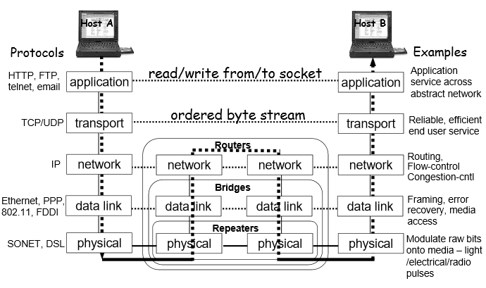
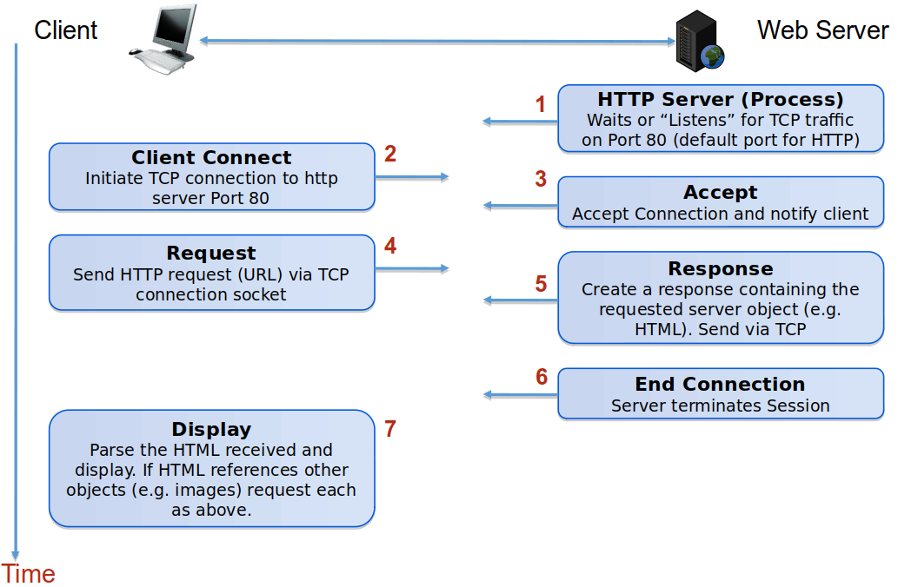
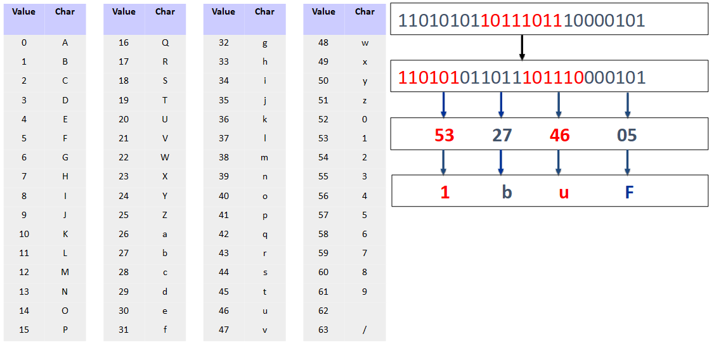

Hypertext Transfer Protocol (HTTP) is the protocol used for communication on the World Wide Web (WWW)
It is at layer 7 of the OSI RM, above the Internet's transport protocol, TCP

Open Systems Interconnection Reference Model (OSI RM), source unknown
HTTP operates within a client-server model and involves two types of messages:
request - sent by the client (e.g. browser) and received by web server
response - sent by the server in reply to the client's request message
The request-response pair of messages constitutes an HTTP session, which takes place over a TCP connection

HTTP Session (by E. Lee)
Early implementations of HTTP opened a new TCP connection for each HTTP session, which had negative effects
on responsiveness, owing to the TCP 3-way handshake and slow-start congestion control approach
on server resource usage, owing to the multiple TCP connections opened for an HTTP page (if it referred to other files)
To improve this situation, starting with HTTP version 1.1 persistent connections were introduced, allowing
TCP connections to be kept open for multiple HTTP sessions
pipelining (asynchronous sending of requests i.e. without waiting for responses)
chunked response (sending of responses in parts)
HTTP message content is entirely text based - media that are normally in binary format are transferred using Multi-purpose Internet Media Extensions (MIME)
More about MIME
Multi-purpose Internet Media Extensions (MIME) is used with HTTP (on the WWW) and with SMTP (email)
It was originally devised for the encoding of email attachments
The MIME type is declared (in HTTP in the header) to inform the recipient of the original file format
MIME uses base64 encoding, whereby three bytes (3 x 8 = 24 bits) are encoded as 4 text characters (represented with 6 bits each)

Base64 encoding example (by E.Lee)
HTTP communiation is stateless
what does this mean?
the server does not have to maintain any information about communication sessions with clients
the server receives a request, processes it, sends a response and then forgets all about it
advantages of stateless communication:
a lot simpler to implement
does not leave the system in an inconsistent state that needs to be dealt with, in case of a crash
disadvantages of stateless communication:
applications where the server needs to 'remember' something, e.g. those including 'shopping carts', cannot be implemented
the use of authentication is impractical (user would have to log in with every HTTP request!)
solutions that do not violate statelessness:
cookies
URL re-writing
invisible form fields
HTTP Request and Response
----req---->
<---res-----
HTTP Request and Response
While studying this section, make sure to open the developer tools in your browser (key F12) and see for yourself some real examples of HTTP requests and responses.
list of supported methods (GET, HEAD etc.), must be present in a 405 Method Not Allowed response
Content-Encoding
tells the requestor how the response content is encoded, for example gzip
Content-Length
decimal number representing the number of octets in the body of the response
Content-Type
the media type of the response content, for example text/html; charset=ISO-8859-4
Expires
date and time after which the response is considered stale (for caching purposes)
HTTP History
:-( ??? :-) !!! t
-+-----+-----+-----+----->
HTTP History
early 1990s
HTTP 0.9 (numbered retrospectively)
one line protocol, with a single keyword, GET
fulfilled Tim Berners Lee's vision for a simple protocol that would help with the adoption of the WWW
late 1990s
More complexity
HTTP 1.0 (RFC 1945 in 1996) - informational, not formal specification
headers for request and response introduced to carry metadata
status (success, error etc.) included in response
response content not limited to HTML, for example could be a JPG image
multi-part types are supported
the TCP connection between client and server closes after every request-response pair of messages is exchanged
HTTP 1.1 (RFC 2068 in 1997 and RFC 2616 in 1999) - formal specification i.e. standard
keep-alive feature: connection can be reused for multiple request-response pairs of messages
pipelining: multiple requests can be sent before responses are received
chunked response support
content negotiation, including language, encoding and content type
the Host header line allows for collocation of domains on a single IP address
other concepts
security was added with the Secure Sockets Layer (SSL) on top of TCP and eventually standardised as Transport Layer Security (TLS); HTTP operating over a security layer is referred to as HTTPS (formally specified in 2000)
the Web and HTTP in particular are based on the representational state transfer (REST) architectural style, defined by Roy Fielding in 2000; REST recommends a loosely coupled style that simultaneously allows the provision of rich content by the distributed system
WebSocket (standardised in 2011) is a protocol for full-duplex communication between client and server, different from HTTP; allows Javascript code on a webpage to communicate with the server in a lightweight manner, including 'server push'
2010s
HTTP 2 (RFC 7540 in 2015) - based on Google experimental protocol SPDY; implemented by about 30% of all websites (see graph on W3Techs)
binary protocol (cannot be created or read manually)
multiplexed (no restriction on number or order of requests of a single TCP connection